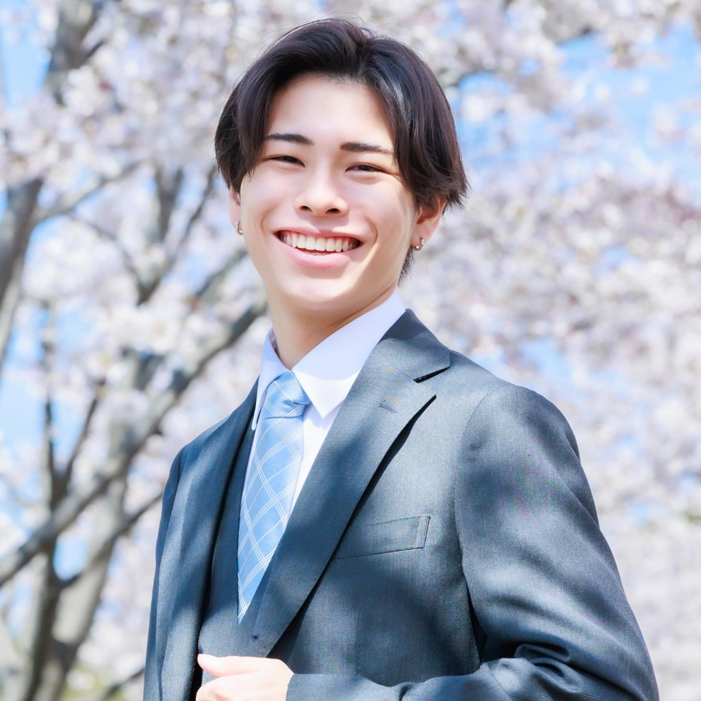

二十歳の目線で 見えている 言葉の温度と 距離の遠さ
同世代の当事者として、若手離職の構造を見つめる
若手の早期離職や、体調不良ではないのに力が入らないプレゼンティーズムは、多くの企業で採用・育成コストの問題として語られます。一方で、現場で起きているのは、業績や制度の数字だけでは説明しきれない距離感の問題でもあります。人事担当や教育係の方がブラザー・シスター制度を運用していても、相手が五つ年上、十つ年上となると、声のかけ方や距離の取り方に迷いが生じやすい。新入社員側も、言葉の選び方や誘い方のさりげないニュアンスで、小さな圧力を感じることがあります。
これは根性の有無ではなく、心理的安全性が十分に担保されていないときに起きやすい現象だと、二十歳の当事者として私は見ています。年上のコンサルタントや人事担当者が資料やアンケートで整理できるのは、制度や施策の輪郭までです。本人の言葉にならない違和感、同世代にしか伝わりにくい温度差、職場で距離を置かざるを得なくなる瞬間までは、同じ世代でなければ拾いにくい。若手を根性がない世代と決めつける前に、環境に適応する力が問われていると、私は捉えています。
常に心の逃げ道になりうるSNSがあるいま、人間関係を自分でほどき、工夫する機会が減っている側面もあると分析しています。経営者・人事の方に問いかけたいのは、新入社員の気持ちに近い目線で相談に乗れる人が、組織の中に実在するかという一点です。二十歳という立場は、経験年数ではない。ベテランにはない当事者性として、職場の空気を読み解くうえで最も信頼できる情報源になり得る土台です。